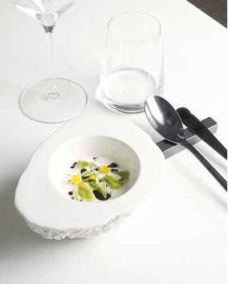
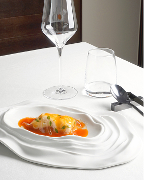
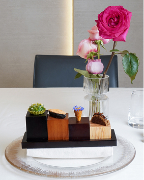
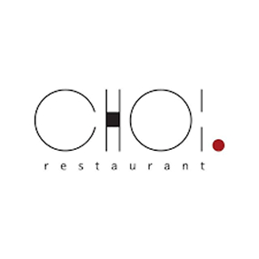
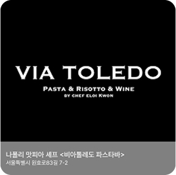

  
"다이닝의 세계로 오신 것을 환영합니다."

쵸이닷
위치
인스타
미식의 새로운 기준을 제시하는 컨템포러리 다이닝. 도심 속에서 만나는 정제된 한 끼, 쵸이닷은 셰프 최현석이 이끄는 컨템포러리 다이닝 레스토랑입니다. 전통 한식의 깊은 뿌리를 현대적인 감각으로 재해석한 요리들은 미각을 넘어 감성까지 자극합니다. 제철 재료를 바탕으로 구성된 메뉴는 창의적인 조리법으로 재탄생합니다. 테이스팅 코스는 예술적인 비주얼과 섬세한 플레이팅으로 특별한 미식 경험을 선사합니다.

비아톨레도 파스타바
위치
인스타
나폴리의 골목에서 서울까지, 정통 이탈리안 파스타의 감동 비아톨레도 파스타바는 이탈리아 나폴리의 활기찬 거리 ‘Via Toledo’에서 영감을 받은 정통 이탈리안 파스타 전문점입니다. 셰프가 직접 수제로 만드는 신선한 파스타와 이탈리아 현지에서 직수입한 재료들이 어우러져, 서울 한복판에서 진짜 이탈리안의 맛을 경험할 수 있습니다. 모든 메뉴는 ‘간결하지만 깊이 있는 맛’을 지향하며, 파스타 본연의 풍미를 살리는 데 집중합니다. 크리미한 까르보나라부터 해산물의 풍부한 풍미가 느껴지는 봉골레, 계절에 따라 구성되는 스페셜 메뉴까지—비아톨레도 파스타바는 매 방문마다 새로운 감동을 전합니다. 캐주얼하지만 감각적인 공간에서, 편안하게 즐기는 미식의 시간. 비아톨레도는 파스타를 좋아하는 이들을 위한 가장 확실한 선택입니다.
모수
위치
인스타
모수 Mosu 섬세함과 실험 사이, 한 끼를 예술로 만드는 공간 모수는 셰프 안성재가 이끄는 파인 다이닝 레스토랑으로, 한국적 재료와 세계적인 감각이 정교하게 결합된 요리를 선보입니다. 캘리포니아에서 시작된 ‘Mosu’는 서울 한남동에 자리하며, 지역성과 계절감, 그리고 셰프의 철학이 담긴 테이스팅 코스로 깊은 인상을 남깁니다. 모수의 요리는 단순한 식사를 넘어 ‘경험’ 그 자체입니다. 제철 식재료를 예술적으로 해석한 플레이팅, 조용하고 세련된 공간, 그리고 매 순간 완성도 높은 서비스는 미쉐린 스타를 넘어선 품격을 증명합니다. 모수는 ‘한식’을 고집하지 않지만, 한국이라는 장소와 재료를 바탕으로 독창적인 미식 언어를 만들어갑니다. 절제된 아름다움 속에 숨겨진 디테일이, 방문객의 기억 속에 오래도록 남습니다.
610 Magnolia
위치
인스타
610 Magnolia는 미국 켄터키 루이빌에 위치한 파인 다이닝 레스토랑으로, 셰프 에드워드 리가 이끄는 창의적인 남부 요리를 선보입니다. 현지의 제철 재료를 활용한 계절별 테이스팅 코스를 통해 섬세한 맛과 감각적인 플레이팅을 경험할 수 있습니다. 남부 전통과 현대적인 감각이 어우러진 요리는 깊이 있는 풍미와 예술성을 자랑합니다. 아늑하면서도 세련된 공간에서 정성 어린 서비스를 제공하며, 특별한 날을 더욱 특별하게 만들어줍니다. 미식의 진정한 가치를 전하는 610 Magnolia는 단순한 식사가 아닌 하나의 여정을 선사합니다.